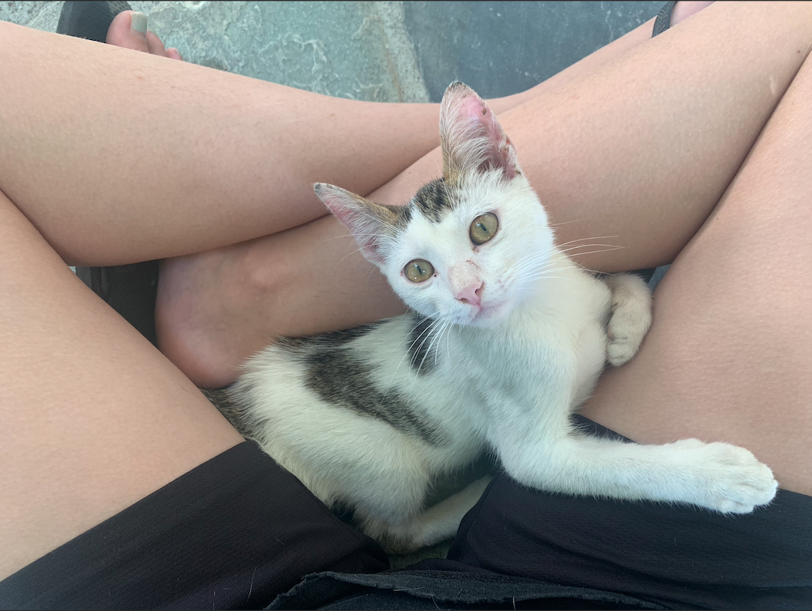
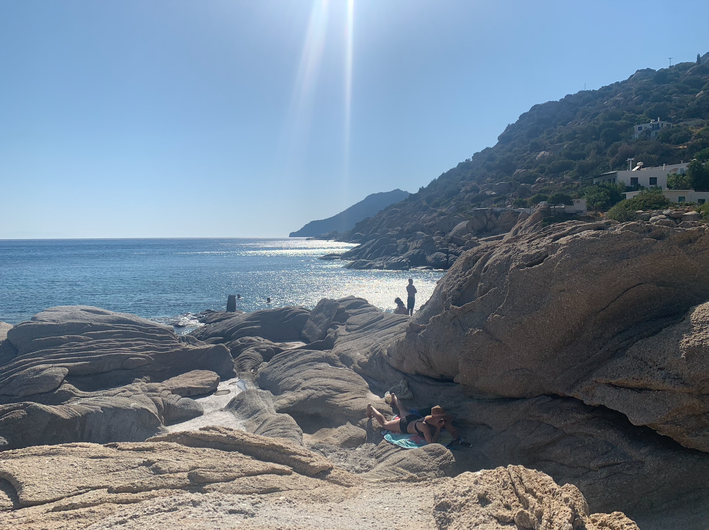
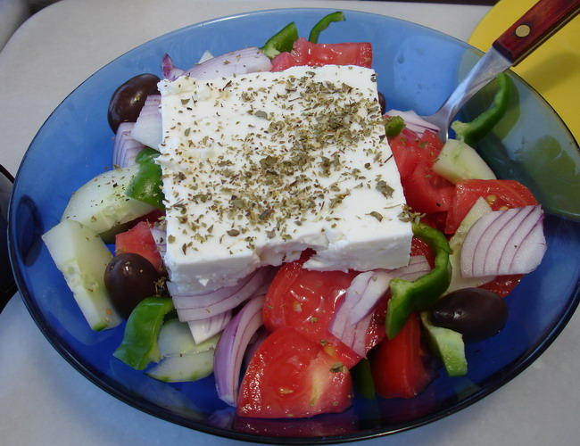

sight
colorful sunsets, endless ocean, rocky landscapes
touch
rocky ground, soft kittens, little paws
smell
ocean water, sunscreen
taste
tomatoes from my grandma's garden, salty feta, local olive oil
sound
plucking of bouzouki strings, whistling and clapping, low chatter